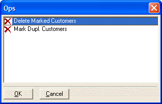

UI_GET_OPERATION()
Syntax
UI_GET_OPERATION( Dialog_Title as C, Operation_Type as C [, Table as C ] )
Argument | Description |
Dialog_Title | The title of the dialog box. |
Operation_Type | The type of operation. The following values are supported:
|
Table | Optional. The name of the table that the operation is attached to. |
Description
The UI_GET_OPERATION() function displays a list of Operations for a given table/set and Operation type.

Limitations
Desktop applications only.
Example
ui_get_operation("Ops", "Mark", "customer") |
See Also
((User Interaction _UI_ Functions|User Interaction (UI) Functions)), Operation Functions and Methods